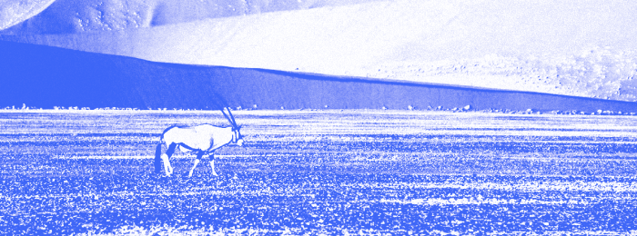

Как собраться в пустыню?
19.12.2022 16:31

На нашей планете множество интереснейших мест, которые хранят удивительные секреты. Некоторые места более доступные и лёгкие для посещения, как, например, ближайшее подмосковье или побережье средиземноморья. Другие — более экстремальные и требующие особой подготовки: высокогорье, тайга, пустыни, и именно о путешествиях в пустыню мы поговорим в этот раз.
Что такое пустыня?
Ну, такая жёлтая жаркая песочница, там живут верблюды, это же очевидно. Отчасти да, это большая территория, где испаряемость влаги сильно выше количества выпавших осадков. Этот фактор и определяет ландшафт пустынь — высохшая почва, протёртая до состояния песка. Ветер двигает и перемещает песок, создавая насыпи и дюны. Днём жарко, яркое солнце нагревает песок, однако верхние песчаные слои почти не передают тепло нижним, и ночью, как только солнце перестаёт светить, пустыня моментально остывает.

Пустыня — это буквально высохшая почва, протёртая до состояния песка.
Что с собой брать?
Нужно хорошо понимать перемену температуры в течении суток, все зависит от солнца, даже если оно высоко поднялось, но скрылось за облаками, тепло не будет.
Для жаркой погоды лучше всего подойдет следующий набор:
Лёгкая, светлая, свободная одежда, с длинным рукавом и штанинами, чтобы не обгореть под прямыми лучами. Хорошо подойдут льняные рубашки, лонгсливы, летние ситцевые брюки, все обязательно светлое, охристых оттенков, темные ткани будут жечься.
Обувь закрытая, легкая, дышащая, можно с высоким голенищем. Спускаясь с зыбких дюн можно собрать и унести пустыню в ботинках.
На голову шляпа на веревочке, но лучше лёгкий платок. В пустынях сильные ветра, которые несут колкий песок. Чтобы не напекло голову и песчинки не застряли в волосах, найдите себе широкий платок. Многие панамки и шляпки может просто сдуть.
Обязательно возьмите солнечные очки и крем от загара. Хорошим дополнением будет бальзам для губ, все от того же злючего ветра. Для холодной пустыни дополните набор пуховиком, теплыми носками и шапкой. Не шутка.
Хорошим референсом для вас станут покрытые с ног до головы бедуины и туареги. Исследуйте пустыню безопасно.